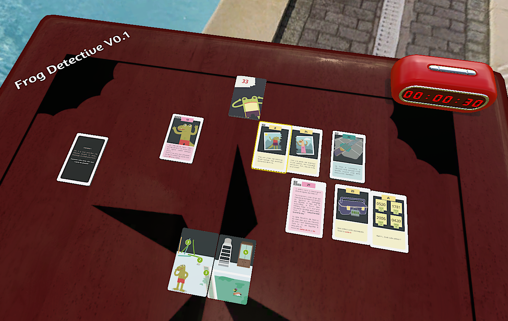
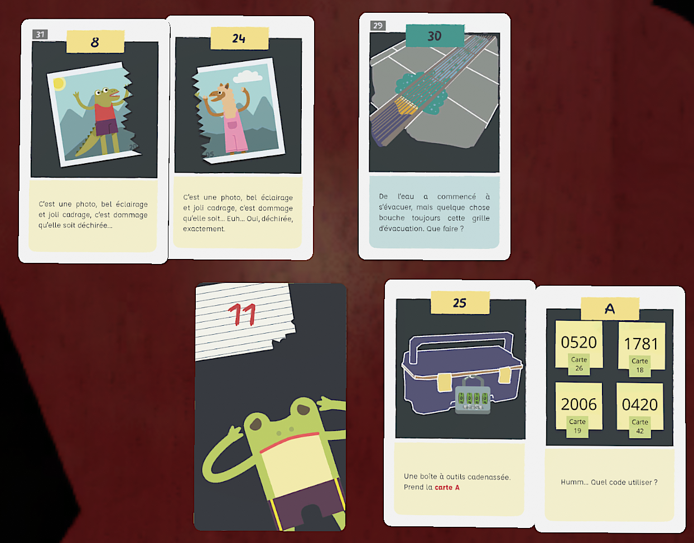
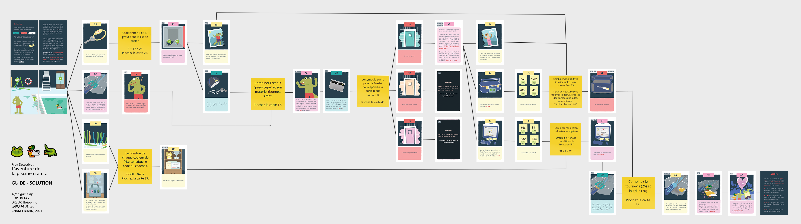

← Back
A Frog At The Pool
#GameDesign #Cards #FanGame #2D
It’s Sunday, and Froggy goes to the swimming pool, but the water is all greenish. Who done it ?
A frog detective fan game made with Tabletop Simulator. Find clues on cards, combine numbers and witness a heart-breaking drama.
Available on the TTS workshop here.
  